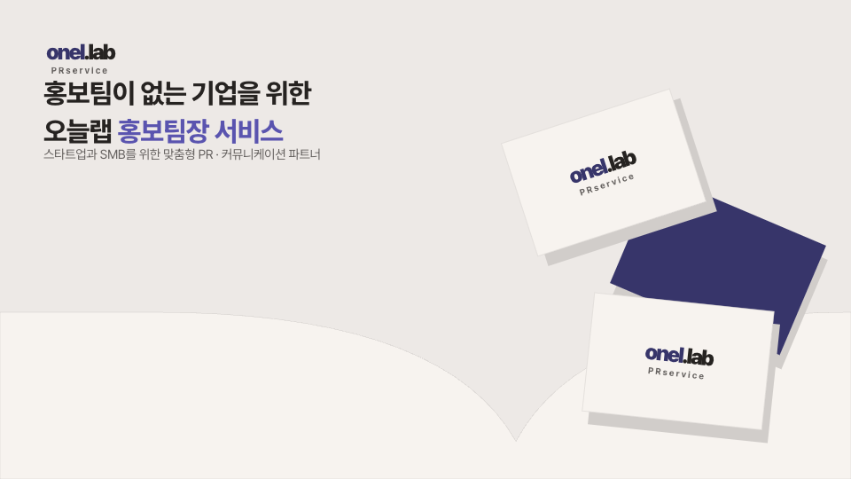
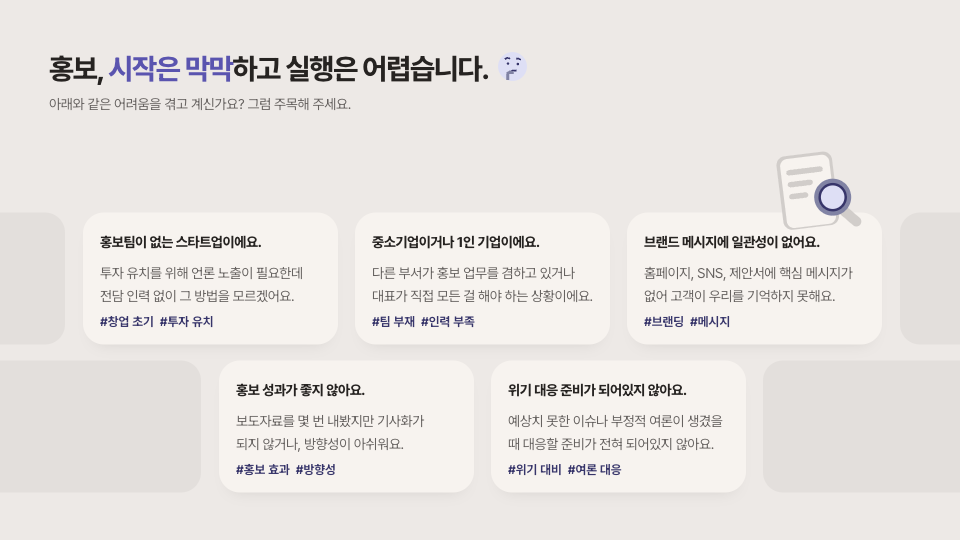
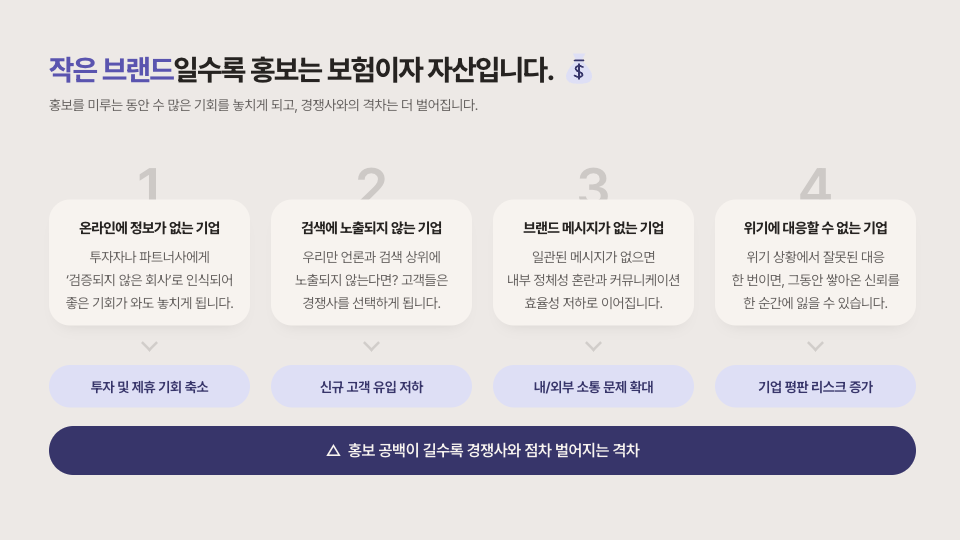
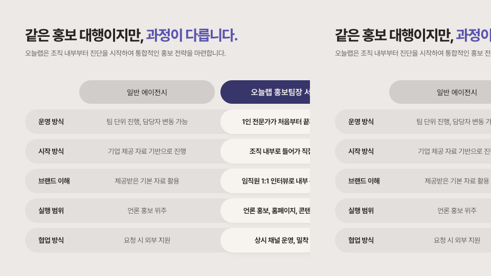
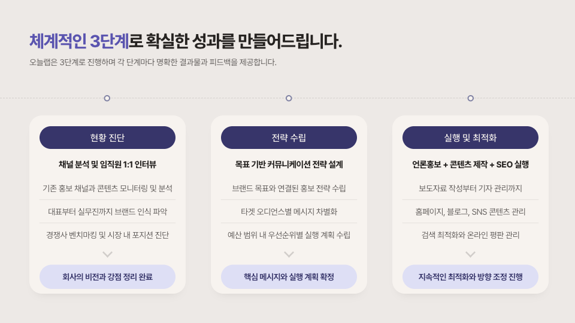
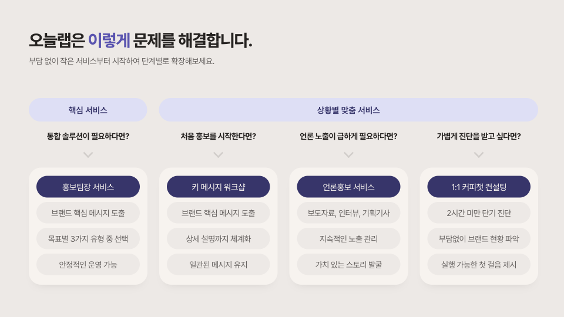

홍보팀장 서비스
좌측 서비스 제목과 우측 명함 3장 중첩 · 좌측 서비스 제목과 우측 명함 3장 중첩

홍보의 어려움
상단 문제 제기와 엇갈린 3+2 카드 · 상단 문제 제기와 엇갈린 3+2 카드

작은 브랜드의 홍보 필요성
번호가 겹친 4열 리스크 카드와 하단 전체 폭 결론 · 번호가 겹친 4열 리스크 카드와 하단 전체 폭 결론

일반 대행사와 과정 비교
5행 비교표와 오른쪽 점선 연결 설명 · 5행 비교표와 오른쪽 점선 연결 설명

체계적인 3단계 프로세스
점선 타임라인 아래 3열 단계·작업·결과 카드 · 점선 타임라인 아래 3열 단계·작업·결과 카드

상황별 맞춤 서비스
1+3 서비스 분류 띠와 4열 질문·답변 카드 · 1+3 서비스 분류 띠와 4열 질문·답변 카드